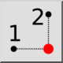

Y/X від точок
Панель інструментів / Піктограма:


Меню: Прив'язка > Y/X від точок
Шорткод: P, Y
Команди: py
Панель інструментів / Піктограма:


Цей інструмент працює так само, як інструмент X/Y з точок, але з протилежним порядком введення координат.